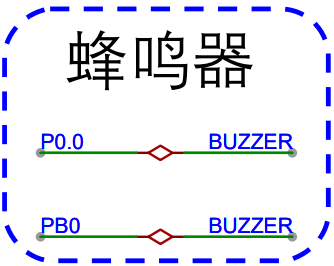

<!DOCTYPE lake>
<h2 data-lake-id="YUYvd" id="YUYvd"><span data-lake-id="ufab1b56f" id="ufab1b56f">学习目标</span></h2><ol list="ub5b8022b"><li data-lake-id="uc4b00f51" fid="u027863a0" id="uc4b00f51"><span data-lake-id="ud79db62b" id="ud79db62b">掌握驱动移植驱动</span></li><li data-lake-id="ucb962f49" fid="u027863a0" id="ucb962f49"><span data-lake-id="ue81aaf61" id="ue81aaf61">掌握动态修改周期</span></li></ol><h2 data-lake-id="VFAbu" id="VFAbu"><span data-lake-id="ucfd295c5" id="ucfd295c5">学习内容</span></h2><h3 data-lake-id="KBfLK" id="KBfLK"><span data-lake-id="u23bea923" id="u23bea923">需求</span></h3><p data-lake-id="ub7d29120" id="ub7d29120"></p><p data-lake-id="uad0ab07b" id="uad0ab07b"><span data-lake-id="udf1bba6c" id="udf1bba6c">通过控制PB0来播放音乐</span></p><p data-lake-id="u8b7e7107" id="u8b7e7107"><span data-lake-id="u0e35ea9c" id="u0e35ea9c">PB0，采用Timer2 CH2来实现</span></p><h3 data-lake-id="f5dAu" id="f5dAu"><span data-lake-id="uba262302" id="uba262302">Timer功能实现</span></h3><span class="yuque-card-unsupported">[codeblock]</span><span class="yuque-card-unsupported">[codeblock]</span><h3 data-lake-id="QmJxF" id="QmJxF"><span data-lake-id="u588de923" id="u588de923">原来的驱动</span></h3><span class="yuque-card-unsupported">[codeblock]</span><span class="yuque-card-unsupported">[codeblock]</span><span class="yuque-card-unsupported">[codeblock]</span><h3 data-lake-id="iyZwd" id="iyZwd"><span data-lake-id="uc1eee828" id="uc1eee828">移植操作</span></h3><h4 data-lake-id="gQrJp" id="gQrJp"><span data-lake-id="u14053a6c" id="u14053a6c">替换初始化</span></h4><span class="yuque-card-unsupported">[codeblock]</span><p data-lake-id="ubeaac766" id="ubeaac766"><span data-lake-id="u2a324eb1" id="u2a324eb1">将原有的初始化逻辑修改为新的pwm更新</span></p><h4 data-lake-id="Tcecn" id="Tcecn"><span data-lake-id="u3a3c7a17" id="u3a3c7a17">更新Play函数</span></h4><span class="yuque-card-unsupported">[codeblock]</span><ul list="u7a5f5394"><li data-lake-id="u0de913b0" fid="ue3ea90e1" id="u0de913b0"><span data-lake-id="uba7179b0" id="uba7179b0">分频问题需要解决</span></li><li data-lake-id="u1a158d5c" fid="ue3ea90e1" id="u1a158d5c"><span data-lake-id="u7e5fb558" id="u7e5fb558">分频根据hz值来设定</span></li></ul><h4 data-lake-id="VqIvj" id="VqIvj"><span data-lake-id="ud6a8b901" id="ud6a8b901">完整代码</span></h4><span class="yuque-card-unsupported">[codeblock]</span><span class="yuque-card-unsupported">[codeblock]</span><p data-lake-id="ua752fb58" id="ua752fb58"><br/></p><h2 data-lake-id="igPgl" id="igPgl"><span data-lake-id="u45adac4c" id="u45adac4c">练习题</span></h2><ol list="u566cb3b9"><li data-lake-id="u29cf7e78" fid="u34148561" id="u29cf7e78"><span data-lake-id="u442c7a49" id="u442c7a49">实现buzzer播放music</span></li><li data-lake-id="u630fa662" fid="u34148561" id="u630fa662"><span data-lake-id="u4187f757" id="u4187f757">体会所有Timer的逻辑，尝试封装Timer</span></li></ol>